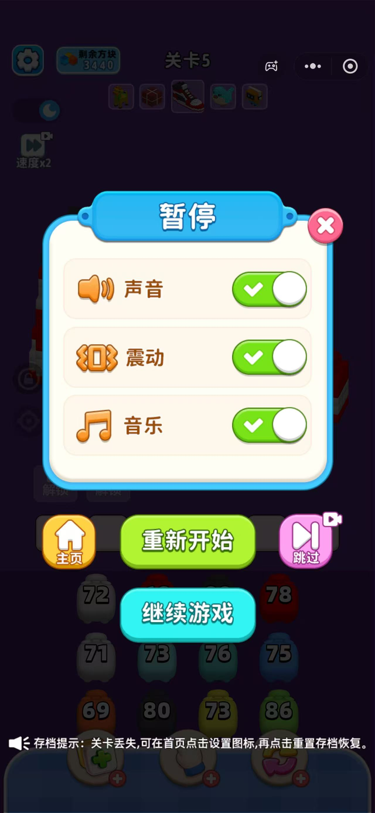
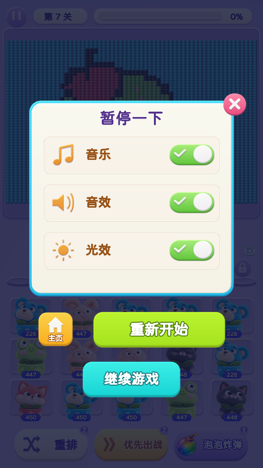
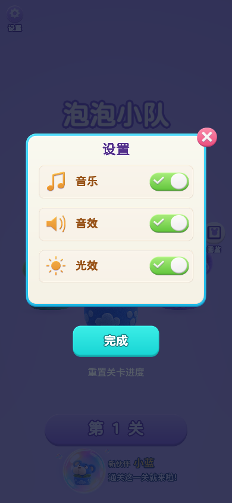
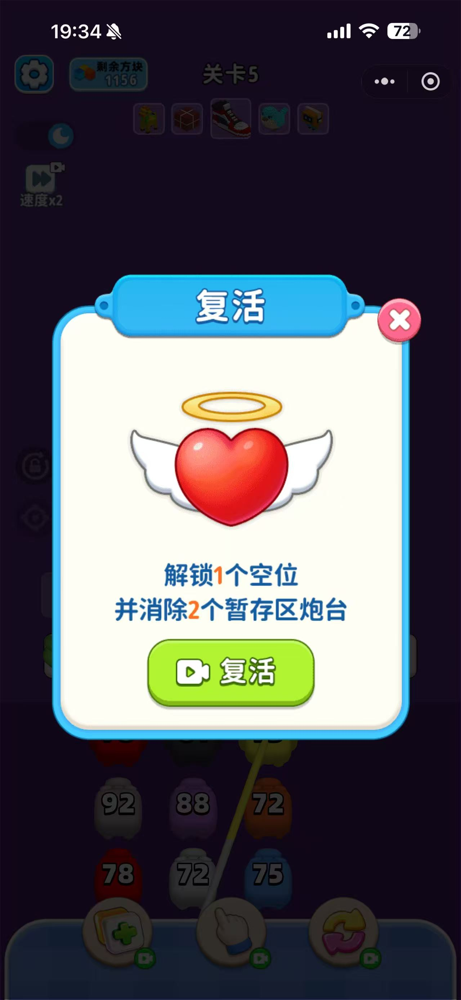
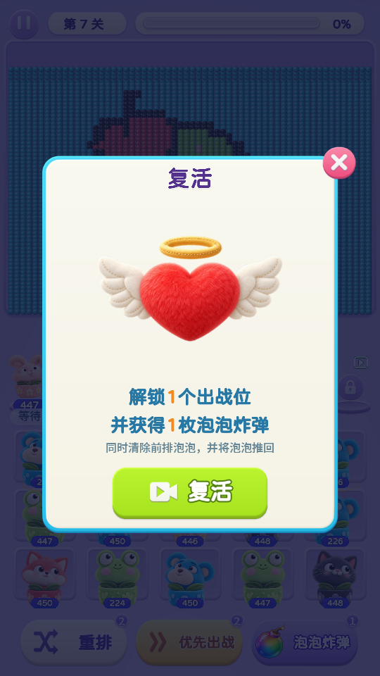
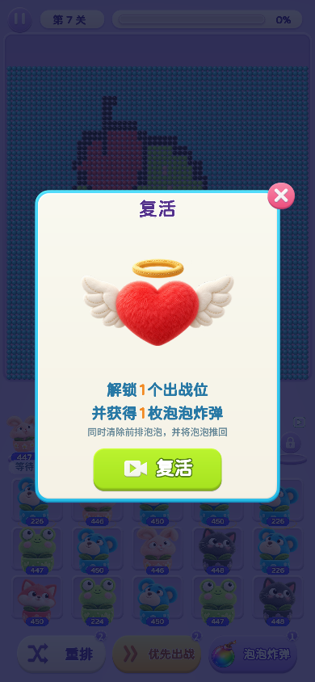
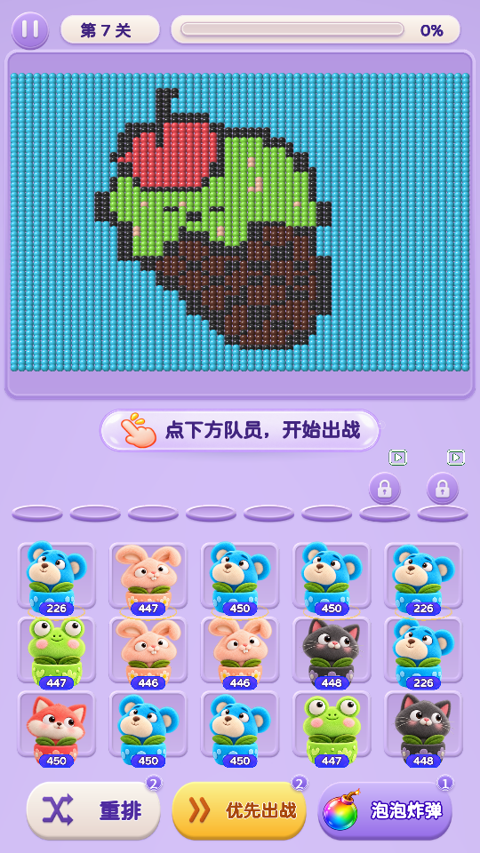
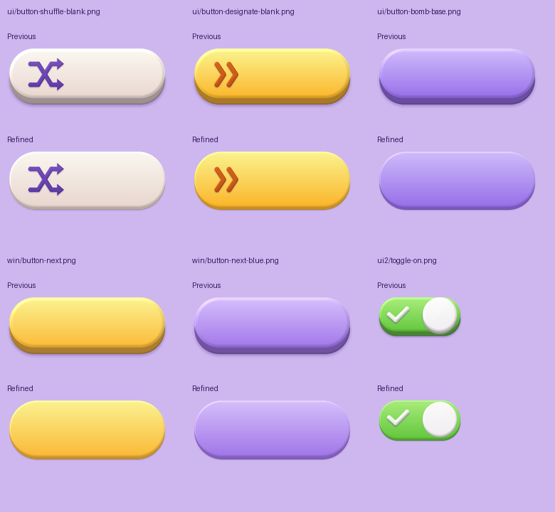
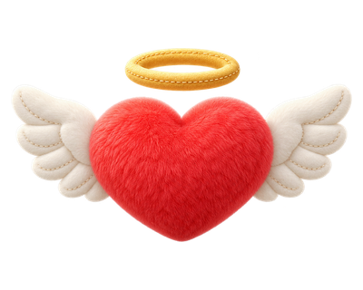

设置与复活 · 参考图落地
浅奶油面板、青色窄边框、圆角设置行与彩色操作按钮。标题保持简洁文字，按钮保留轻薄底边和贴近底部的投影。
设置与暂停
设置项纵向排列，主页与重新开始放在面板下方，继续游戏单独居中。主页设置页使用“完成”收起弹框。

参考图参照面板、按钮和布局，标题保持当前简洁样式。

游戏内暂停 · 540 × 960音乐、音效和光效开关；主页、重新开始和继续游戏。

主页设置 · 390 × 844设置图标已放大，关闭按钮与完成按钮均可操作。
复活
中心爱心改为细短绒玩具，搭配奶白色软翅膀与金色光环。奖励文案对应现有游戏：增加 1 个出战位、获得 1 枚泡泡炸弹，并清除前排泡泡、将泡泡推回。

参考图参照中心插画、收益说明、绿色主按钮与粉色关闭按钮的位置。

复活 · 540 × 960简洁标题、毛绒爱心与轻薄按钮。

复活 · 390 × 844长屏布局及复活后出战位、炸弹奖励已验证。
关卡下方按钮

最新游戏界面重排、优先出战和泡泡炸弹同步保留收薄后的底边与投影。

按钮厚度调整减少实心底边、阴影范围与高光层的厚重感。

毛绒爱心素材使用内置 ImageGen 生成。素材 · 完整提示词与生成记录
已通过 540 × 960、390 × 844 浏览器视口检查；设置开关、关闭、继续、重新开始、返回主页及复活流程均通过。最终构建补齐复活标题并放大图标后，已重新检查两种比例与复活奖励。未进行实体手机测试。